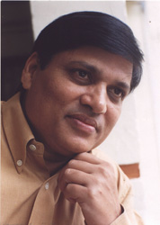

|
TARIQ
CHHATARI worked with All India Radio for close to a decade before
joining Aligarh Muslim University as Reader in the Department of Urdu.
He published Baagh kaa Darvaazaa, his first collection of stories,
in 2001. He also edited a volume of Urdu-Hindi stories, Jadeed Afsaana,
in 1992. His stories generally deal with the dilemmas of modern life,
the stresses and strains encountered in human relationships and the
little cameos that are often overlooked by those who paint the larger
picture.
|
|  |